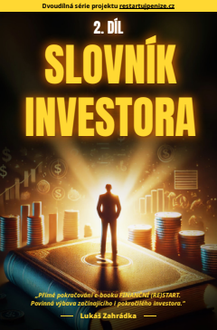
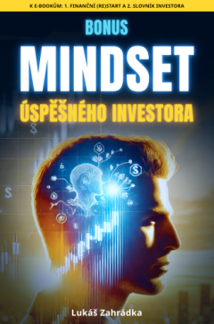
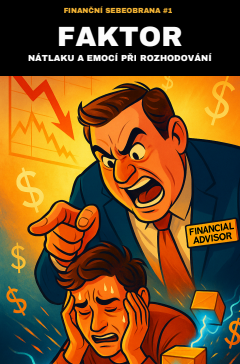
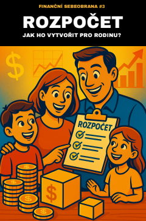
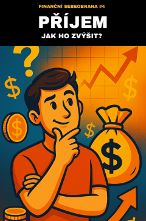
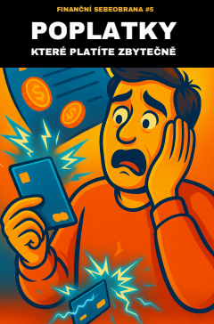
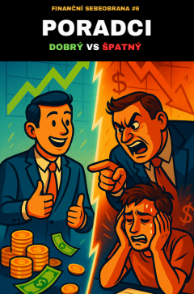
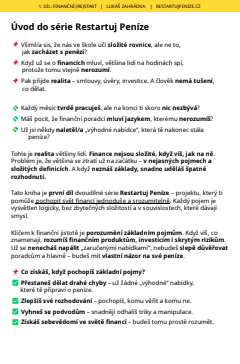
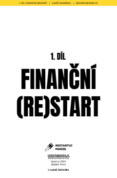
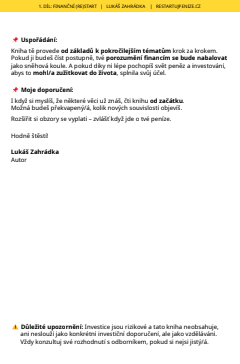

Před podpisem smlouvy
Víte, které pojmy, náklady a podmínky si potřebujete nechat vysvětlit.
Bez prodeje finančních produktů
Dvě rozsáhlé příručky, bonus k investičnímu mindsetu a šest praktických e-booků pro rozhodnutí, která řešíte v běžném životě.
9 PDF • jednorázová platba • bez předplatného • bez následného prodejního hovoru


Mindset úspěšného investora
Součást kompletního balíčku spolu se šesti praktickými e-booky.
Pro chvíle, kdy nestačí jen tušit
Balíček neslibuje zázračné výnosy. Dává vám jazyk, souvislosti a kontrolní otázky, se kterými se můžete rozhodovat informovaněji.
Víte, které pojmy, náklady a podmínky si potřebujete nechat vysvětlit.
Máte konkrétní otázky a kritéria, podle kterých můžete nabídky porovnat.
Začnete rozpočtem a místy, kde má smysl zkontrolovat pravidelné výdaje.
Rozpoznáte emoční spouštěče a získáte prostor rozhodnout se vlastním tempem.
Jádro celé knihovny
Základní mapa osobních financí od první výplaty po rozpočet, dluhy, rezervu, ekonomické souvislosti a budování majetku.
Srozumitelná referenční příručka investičních pojmů, nástrojů a principů, ke které se můžete průběžně vracet.
Šest průvodců pro konkrétní situace
Otevřete e-book k tématu, které právě řešíte. Každý titul má svou skutečnou obálku, přesný účel a je součástí kompletního balíčku.

Praktický e-book
Když potřebujete rozpoznat tlak, FOMO a manipulativní způsob prodeje.
Praktický e-book
Když porovnáváte regulaci, poplatky, výběry a podmínky platforem.

Praktický e-book
Když chcete dostat příjmy, výdaje, rezervu a cíle do jednoho systému.

Praktický e-book
Když chcete pojmenovat svou hodnotu a připravit se na rozhovor o odměně.

Praktický e-book
Když chcete projít oblasti, kde lze porovnat cenu nebo vyjednat lepší podmínky.

Praktický e-book
Když chcete prověřit motivaci, odměňování a odpovědi finančního poradce.
Emoce, FOMO, pravidelnost a osobní pravidla pro klidnější rozhodování. Bonus doplňuje znalosti o způsob, jak s nimi pracovat v praxi.
Uvnitř skutečných knih
Hlavní knihy kombinují výklad, příklady a kontrolní otázky. Kratší e-booky pak pomáhají rychle otevřít konkrétní problém.
Finanční (Re)Start vám dá mapu a pořadí témat.
Slovník investora používejte jako průběžnou referenci.
Vyberte jeden ze šesti praktických průvodců.



Zpětná vazba testovacích čtenářů
Konkrétní dojmy lidí, kteří dostali materiály k přečtení — bez anonymních hvězdiček a bez přikrášlování.
„Průvodce do světa investování, který od základu všechno vysvětlí. Obrázky, struktura — je to čtivé.“
„Je to víc zaměřené na praxi. Ve škole se člověk učí, ale často neví, jak informace použít.“
„Všechno to usazuje a dává lidem jistotu, aby se mohli ve financích opřít sami o sebe.“
Autor projektu
Lukáš Zahrádka
Proč Restartuj Peníze vzniklo
Vlastní neznalost důležitých podmínek ve smlouvě mě stála více než 100 000 Kč. Začal jsem si finanční témata skládat od základů a převádět je do podoby, které rozumí i člověk bez ekonomického vzdělání.
Výsledkem není návod, kam investovat. Je to knihovna, která vám pomůže lépe rozumět informacím, se kterými se při finančních rozhodnutích setkáváte.
Kompletní balíček Restartuj Peníze
Dvě hlavní knihy, Mindset jako bonus a šest praktických e-booků pro běžná finanční rozhodnutí.
Jednorázová cena za všech 9 e-booků
1 490 Kč
digitální doručení • bez dalších plateb
Toto je náhled nabídky. Tlačítko zatím neodesílá objednávku ani platbu.
Časté otázky
Přesně víte, co kupujete — a také co tento balíček neslibuje.
Ano. Finanční (Re)Start začíná od základů. Slovník investora používáte jako průběžnou referenci a kratší e-booky otevíráte podle situace, kterou právě řešíte.
Ne. Začněte hlavní knihou a potom si vyberte konkrétní průvodce. Smyslem balíčku je mít spolehlivou knihovnu, ke které se můžete vracet.
Informace jsou uspořádané do jednoho návazného systému. Nemusíte skládat základy z desítek článků a zároveň máte praktické kontrolní otázky pro běžné situace.
Ne. Materiály vysvětlují pojmy, rizika a kontrolní otázky. Neříkají vám, co máte koupit, a nenahrazují individuální finanční, právní ani daňové poradenství.
Principy a kontrolní otázky jsou navržené jako dlouhodobě použitelné. Konkrétní sazby, regulaci a podmínky poskytovatelů je vždy potřeba ověřit v aktuálních oficiálních zdrojích.
Jde o digitální e-booky ve formátu PDF pro počítač, tablet i telefon. Nejde o tištěné knihy.
Po úspěšné platbě vám přijde e-mail s přístupem nebo odkazy ke stažení. V této náhledové verzi ještě platební krok není aktivní.
Ne. Cena je jednorázová a nevzniká žádná automaticky obnovovaná platba.
Začněte u základů a otevřete konkrétní průvodce ve chvíli, kdy ho potřebujete.
Prohlédnout kompletní nabídkuKompletní balíček • 9 e-booků
1 490 Kč